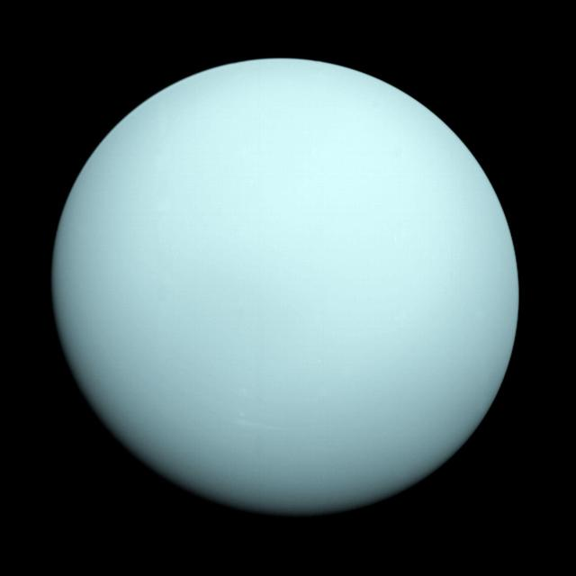

Uranus
Uranus is an ice giant, the seventh planet from the Sun, and it rotates on its side.
Methane in its atmosphere absorbs red light, which gives Uranus a pale blue-green color. William Herschel discovered it in 1781, making it the first planet found with a telescope.

Atmosphere and Structure
Uranus is made mostly of water, ammonia, and methane ices around a small rocky core, wrapped in an atmosphere of hydrogen and helium. It has the coldest planetary atmosphere in the solar system.
The planet has 13 known rings and 29 known moons, many named after characters from works by Shakespeare and Alexander Pope.
Orbit and Rotation
Uranus's axis is tilted about 98 degrees, so it rolls around the Sun like a ball on its side. It also spins backward compared with most planets.
Because of that tilt, each pole gets about 42 years of continuous sunlight followed by 42 years of darkness. A full trip around the Sun takes 84 Earth years.
Exploration
Voyager 2 is the only spacecraft to visit Uranus, flying past in January 1986. It discovered ten new moons and two new rings.
Scientists have named a Uranus orbiter and probe a top priority for future NASA missions.